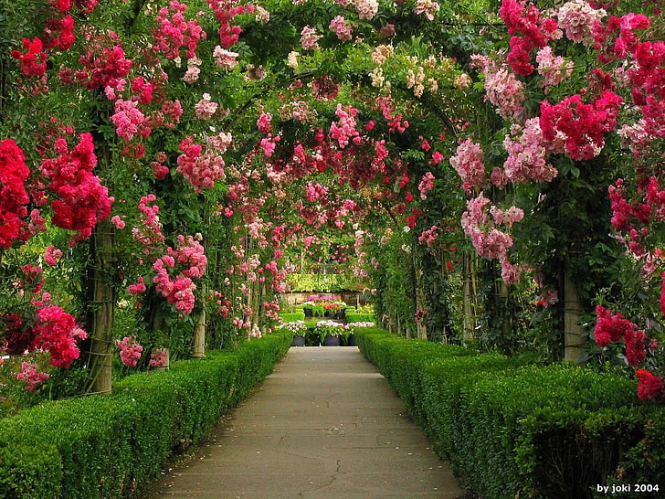
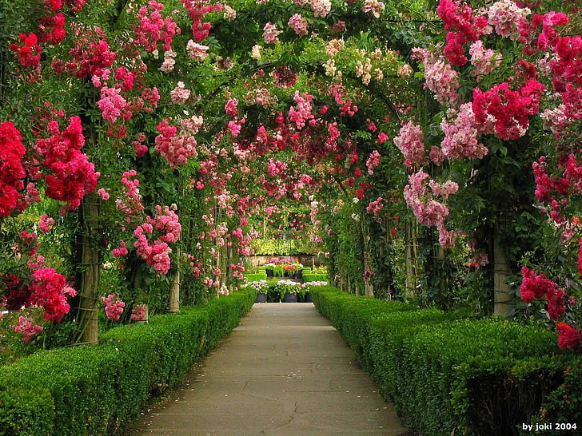

About Our Garden
Botanical garden is a sanctuary of diverse plant life, dedicated to conservation, education, and enjoyment. We strive to preserve rare and endangered species while providing a peaceful retreat for visitors.
Founded in (1296–1316), our garden spans Hauz Khas acres and features a variety of themed gardens, including a rose garden, a tropical conservatory, and a medicinal herb garden.
Our Collections
- Rose Garden: A vibrant display of various rose species and hybrids.
- Tropical Conservatory: A lush greenhouse showcasing tropical plants from around the world.
- Medicinal Herb Garden: A collection of herbs used in traditional and modern medicine.
- Cactus and Succulent Garden: A dry garden with diverse cacti and succulents.
- Native Plant Garden: Showcases the plants indigenous to the local region.
Photo Gallery
 

Plan Your Visit
Opening Hours: Mon: 5:40 AM–11:06 PM
Tue: 5:40 AM–11:06 PM Wed: 5:40 AM–11:06 PM Thu: 5:40 AM–11:06 PM Fri: 5:40 AM–11:06 PM Sat: 5:40 AM–11:06 PM Sun: 5:40 AM–11:06 PMAdmission: ₹20 per person for Indians and ₹250 per person for foreign tourists.
Location: Post Office Hauz Khas SO (Sub-Office), South West Delhi, Delhi, India (IN), Pin Code: 110016
Contact: 011-26514725 | hauzkhas2802@gmail.com
We offer guided tours, educational programs, and special events. Check our calendar for upcoming activities.